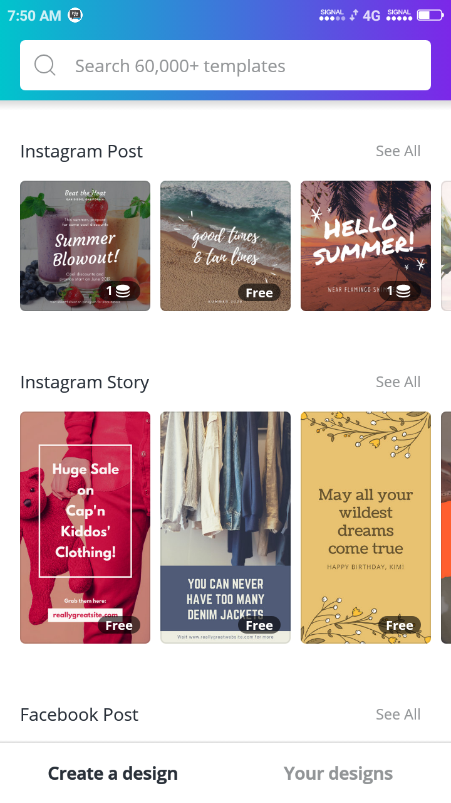
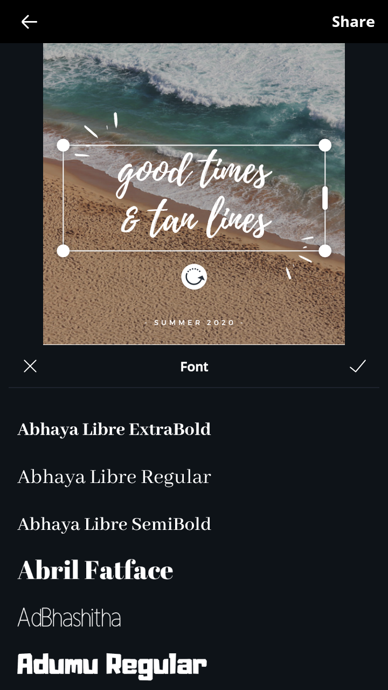
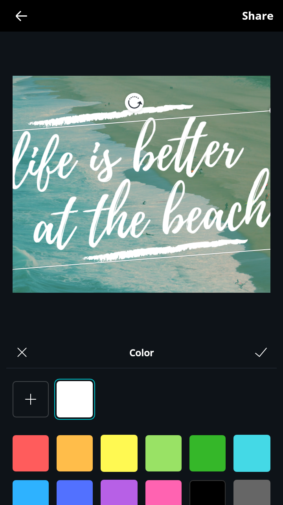
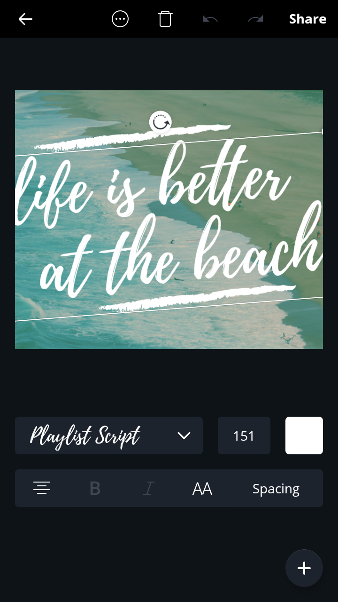
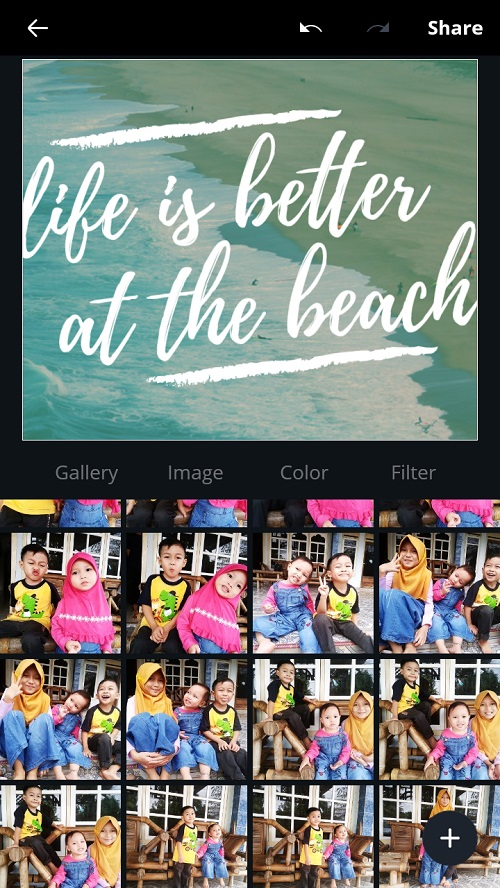
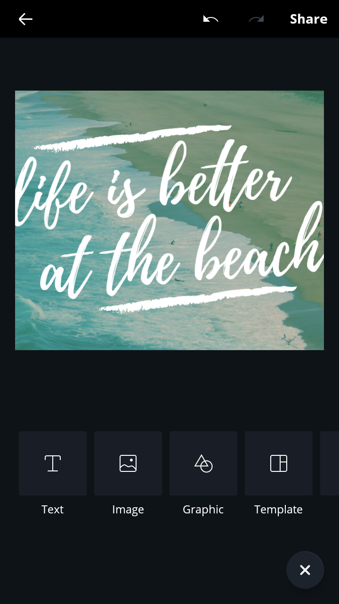
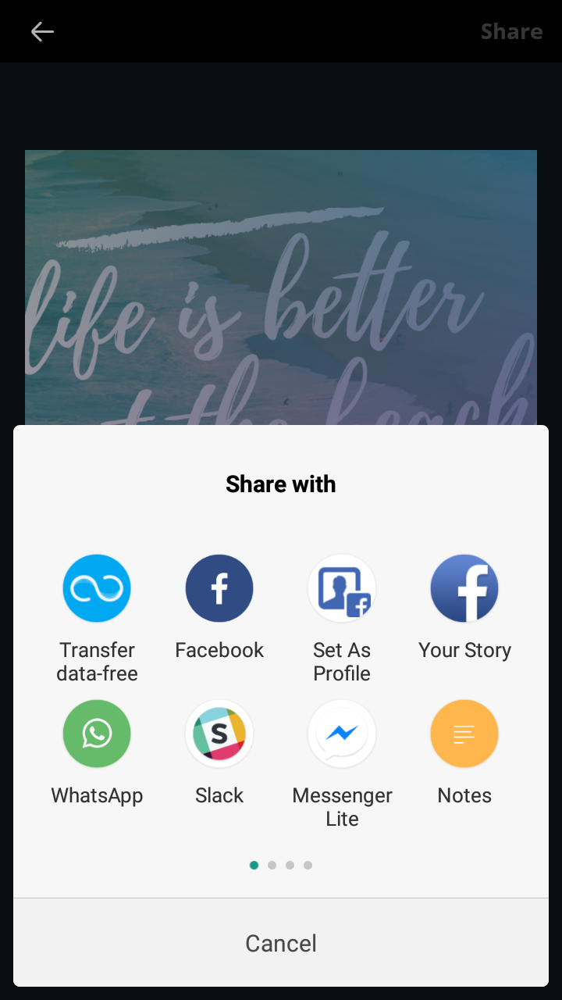

Design with Canva
Materi telah didesain bedasarkan kebutuhan perusahaan dibidang teknologi
Belajar Canva Dari Nol. Yakin Deh, Habis Ini Kamu Langsung Bisa
Membuat poster, spanduk, undangan atau kartu ucapan kini jauh lebih mudah dibandingkan satu dekade lalu. Sekarang ini ada banyak sekali tool baik yang berbasis web, mobile ataupun aplikasi desktop tersedia untuk dipakai. Beberapa dapat dipergunakan secara cuma-cuma, sebagian lainnya berstatus premium dengan biaya tertentu.
Salah satu tool yang cukup menarik adalah Canva yang kehadirannya di Indonesia terbilang baru. Startup asal Australia ini mendeklarasikan kedatangannya ke tanah air pada 2017 meskipun basis penggunanya sudah lebih dulu besar.
Sebelum kita lanjut ke fitur-fitur di aplikasinya, mari kita gali dulu profil Canva ini.
Apa itu Canva?
Canva adalah aplikasi desain grafis menjembatani penggunanya untuk dengan mudah merancang berbagai jenis material kreatif secara online. Mulai dari mendesain kartu ucapan, poster, brosur, infografik, hingga presentasi. Canva saat tersedia dalam beberapa versi, web,iPhone, dan Android.
Sejarah Canva dimulai pada tahun 2012, tepatnya pada tanggal 1 Januari yang menjadi hari lahirnya. Canva didirikan oleh Melanie Perkins yang sebelumnya juga mendirikan Fusion Books, penerbit buku ternama di Australia. Di tahun pertama debutnya, Canva melejit dengan membukukan rekor pengguna sebanyak 750.000.
Lima tahun berjalan, di tahun 2017 Canva mencapai fase di mana perusahaan mulai membukukan laba. Saat itu mereka sudah mempekerjakan 200 orang pegawai yang tersebar di kantor Australia dan San Fransisco. Salah satu pemasukan terbesarnya datang dari pengguna premium yang berjumlah sebanyak 294.000 pengguna. Per 2017, Canva mempunyai 10 juta pengguna dengan cakupan layanan hingga 169 negara.
Fitur-fitur Canva
Template Siap Pakai
Fitur utama dan yang membuat jutaan orang menyukainya adalah ketersediaan template yang sangat beragam, walaupun beberapa di antaranya berbayar. Tapi, opsi gratisnya saja sudah lebih dari cukup untuk dipakai di berbagai acara atau kepentingan. Gampangnya, pilihan gratis Canva tidak akan habis meskipun dipakai untuk desain poster acara berbeda setiap minggunya. Jadi, sudah lebih dari cukup. Tinggal bagaimana kreativitas Anda merancang poster yang menarik.
Font
Setelah template dipilih, selanjutnya pengguna bisa mengubah teks termasuk jenis hurufnya. Ada ratusan jenis huruf (font) yang bisa dipilih, tergantung selera Anda. Saya cukup puas dengan opsi yang mereka suguhkan, terlebih prosedur penggunaannya tidak berbelit-belit.
Warna
Jika huruf sudah diganti, pengguna juga boleh mengubah warna teksnya. Pilihan warnanya juga beragam dan sepertinya Canva cenderung menyarankan opsi warna yang populer.
Format
Format juga didukung di Canva, sehingga pengguna bisa memilih untuk menampilkan teks dalam cetak miring, tebal atau kapital. Kemudian ada juga pilihan perataan, bisa rata kiri, tengah atau kanan. Lalu, Canva juga menyediakan opsi untuk mengatur jarak antar karakter dan baris, istilahnya spacing.
Background
Nah, ini bagian yang tak boleh ketinggalan. Canva memberikan banyak opsi untuk mengubah tampilan background, di antaranya mengambil foto dari galeri memori lokal, gambar dari Canva, warna solid dan juga pemanis berupa filter.
Duplikasi
Fitur ini membantu pengguna mempercepat duplikasi pengaturan teks, di mana pengguna nantinya hanya tinggal mengganti isi teks duplikasi dengan teks yang baru.
Ekstra Konten
Tool-tool tadi tersedia secara default, memudahkan modifikasi template yang sudah ada. Di luar itu, Canva juga menyediakan tool ekstra yang mencakup semua fitur-fitur di atas. Biasanya tool ini dipergunakan untuk desain yang dirancang dari nol.
Di tool ini, Canva menyediakan berbagai input misalnya menambahkan teks, gambar, grafis dan juga template.
Share dan Download
Fitur share untuk membagikan poster yang baru saja dibuat, dan di saat bersamaan Canva juga akan mengunduh poster ke memori lokal. Seperti di banyak layanan, Anda dapat membagikan poster ke berbagai layanan pihak ketiga.
